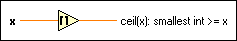

Round Toward +Infinity Function
Owning Palette: Numeric VIs and Functions
Requires: Base Development System
Rounds the input to the next highest integer.
For example, if the input is 3.1, the result is 4. If the input is –3.1, the result is –3. The connector pane displays the default data types for this polymorphic function.

 Add to the block diagram Add to the block diagram |
 Find on the palette Find on the palette |